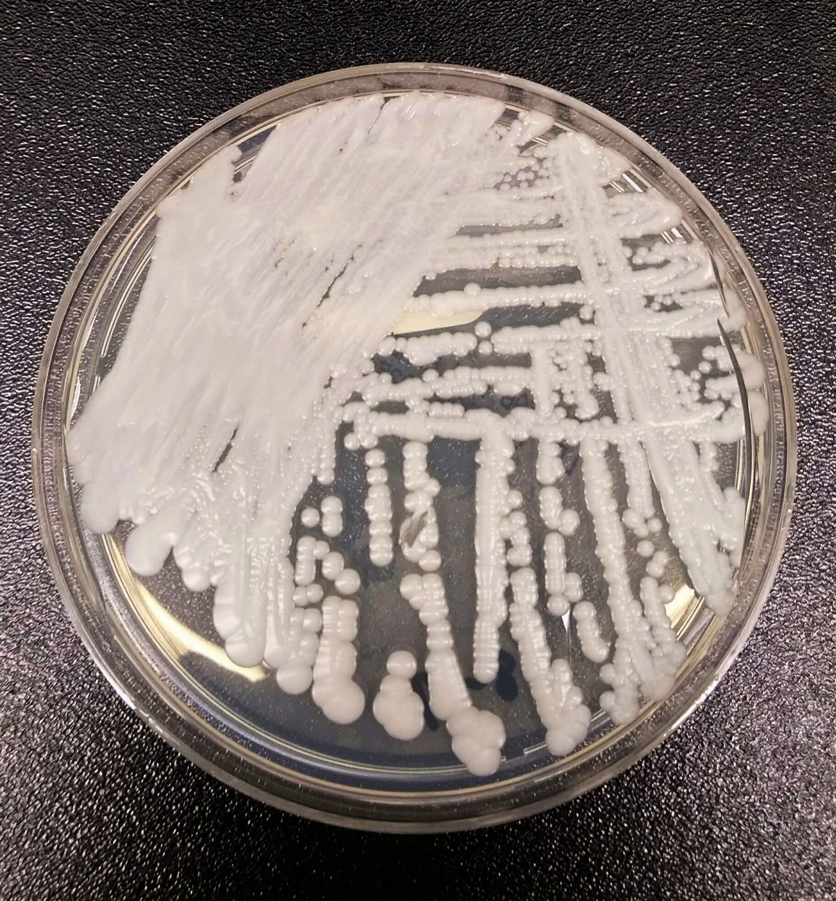

Epidemiología
Salud informó dos detecciones de Candida auris en un establecimiento bonaerense, las primeras en el país desde 2022
El Ministerio de Salud de la Nación y el de la provincia de Buenos Aires comunicaron el 21 de noviembre de 2026 un paciente con infección confirmada y otro colonizado, ambos sin antecedente de viaje. Todavía no se determinó la fuente ni una cadena de transmisión. Las recomendaciones rigen para los hospitales de todo el país, incluida Córdoba.

El Ministerio de Salud de la Nación y el Ministerio de Salud de la provincia de Buenos Aires informaron el 21 de noviembre de 2026 la detección de Candida auris —también denominada Candidozyma auris— en dos pacientes de un mismo establecimiento bonaerense, ninguno con antecedente de viaje. Son las primeras notificaciones en Argentina desde octubre de 2022, cuando el Instituto Nacional de Enfermedades Infecciosas (INEI-ANLIS “Dr. Carlos G. Malbrán”) confirmó los dos primeros aislamientos del país, en una institución de la Ciudad Autónoma de Buenos Aires.
La comunicación epidemiológica, dirigida a los equipos de salud de todo el territorio nacional, describe un evento bajo investigación y una respuesta preventiva dentro del sistema sanitario, no un riesgo generalizado en la comunidad. Hasta el momento no se determinó una fuente de adquisición ni una cadena de transmisión entre los pacientes.
Qué es y por qué importa en el hospital
Candida auris es una levadura emergente, identificada por primera vez en 2009, que ha ocasionado brotes hospitalarios en numerosos países. El Ministerio de Salud de la Nación señala que puede producir infecciones invasivas, sobre todo en personas con enfermedades graves, internaciones prolongadas y dispositivos invasivos; que puede presentar resistencia a una o más clases de antifúngicos; y que coloniza la piel y persiste en superficies y equipos, incluso sin síntomas.
Se transmite por contacto, de manera directa o a través de las manos del personal y de dispositivos contaminados. El organismo oficial advierte que los desinfectantes a base de amonios cuaternarios no deben usarse para controlarlo, por su eficacia insuficiente, y que algunos sistemas convencionales pueden identificarlo mal. En la infección hay un cuadro clínico compatible; en la colonización el microorganismo está presente sin producir enfermedad, pero igual puede contribuir a la dispersión.
Un paciente con infección y otro colonizado
El 12 de noviembre, un laboratorio de la Red Nacional de Laboratorios de Micología de la provincia de Buenos Aires comunicó al Laboratorio Nacional de Referencia del INEI-ANLIS la identificación de C. auris en un paciente internado de 38 años, con trasplante renal, hemodiálisis crónica e internación prolongada desde septiembre de 2026, cirugías y dispositivos invasivos. El microorganismo se aisló de un retrocultivo y de un catéter venoso central femoral, en muestras del 10 y el 11 de noviembre.
Fue identificado por espectrometría de masas MALDI-TOF, métodos fenotípicos convencionales y secuenciación del ADN ribosomal. El aislado resultó sensible a las equinocandinas y presentó sensibilidad a exposición incrementada (categoría I) a la anfotericina B: para esta especie no existe la categoría “sensible” frente a ese fármaco. Para fluconazol se observó una concentración inhibitoria mínima elevada (32 mg/L), un hallazgo frecuente en C. auris. También se iniciaron estudios de secuenciación total del genoma.
La vigilancia de colonización del establecimiento identificó a un segundo paciente, con un hisopado positivo en noviembre y sin evidencia clínica de infección. Ambos habían estado internados en la Unidad Coronaria y compartían exposiciones asistenciales, incluidos procedimientos quirúrgicos y la atención de integrantes comunes del equipo. Esa coincidencia, precisa el documento, todavía no alcanza para reconstruir una cadena de transmisión. El análisis filogenómico ubicó el aislamiento en el clado I, asociado a brotes hospitalarios y a valores altos de concentración inhibitoria mínima frente al fluconazol, con cepas multirresistentes y panresistentes documentadas en ese linaje.
El establecimiento aplicó aislamiento y precauciones de contacto, restringió de manera transitoria el ingreso de nuevos pacientes a la Unidad Coronaria y suspendió de forma preventiva las actividades de un quirófano cardiológico. También inició la búsqueda de colonizados y el seguimiento de contactos, incluso de quienes ya habían egresado o se atendieron en otros establecimientos y centros de hemodiálisis. En el seguimiento participan equipos de la provincia de Buenos Aires, el Programa Nacional VIHDA y la ANLIS-Malbrán. Al 18 de noviembre, los estudios ambientales no habían detectado C. auris, con más de cinco días de incubación: el Ministerio aclara que son resultados preliminares y no descartan una presencia previa en el ambiente ni una transmisión asociada a la atención. La investigación continúa.
Qué implica para los hospitales, también en Córdoba
Desde la identificación de 2022, publicada en el Boletín Epidemiológico Nacional N.º 624, no se habían notificado nuevas detecciones en el país. La reaparición, luego de cuatro años y en pacientes sin antecedente de viaje, es lo que las autoridades califican como un evento de importancia epidemiológica: un solo caso debe activar de inmediato la investigación y el control. Las recomendaciones nacionales de 2022 siguen vigentes y fueron reiteradas ahora.
La comunicación no reporta detecciones en Córdoba ni en otras provincias fuera de Buenos Aires. Sí extiende las indicaciones a todos los establecimientos del país, en especial a los que atienden internaciones prolongadas, pacientes graves, hemodiálisis o personas con atención en más de una institución. Las infecciones y colonizaciones por C. auris son de notificación obligatoria (Ley 15.465, Resolución 2827/2022 y Disposición 1/2026): debe avisarse al SNVS 2.0 desde la sospecha y derivar al laboratorio de referencia los aislamientos dudosos. El documento no indica un riesgo comunitario ni solicita hisopados o consultas masivas a la población general.
Qué le toca a cada uno
- Nación y provincia de Buenos Aires: investigar el evento y sostener la referencia de laboratorio en el INEI-ANLIS Malbrán.
- Establecimientos de todo el país, incluida Córdoba: reforzar la detección, notificar desde la sospecha y aplicar precauciones de contacto ante un caso.
- Laboratorios y control de infecciones: derivar aislamientos dudosos; higiene de manos y limpieza con hipoclorito o peróxido de hidrógeno, no con amonios cuaternarios.
- Población general: la comunicación no recomienda estudios ni describe circulación comunitaria. El riesgo que describe se concentra en el ámbito hospitalario.
Preguntas que siguen abiertas
- ¿En qué establecimiento de la provincia de Buenos Aires se registraron las dos detecciones?
- ¿Se confirmará una cadena de transmisión o una fuente de adquisición?
- ¿Cuál es la evolución clínica del paciente de 38 años con infección y cuántos contactos fueron estudiados?
- Al 24 de noviembre de 2026, ¿hay detecciones en otras jurisdicciones, incluida Córdoba?
Fuente
Ministerio de Salud de la Nación y Ministerio de Salud de la provincia de Buenos Aires, Comunicación Epidemiológica “Detección de Candida auris (Candidozyma auris) en un establecimiento de salud de la provincia de Buenos Aires”, 21 de noviembre de 2026 · Boletín Epidemiológico Nacional N.º 624, semana epidemiológica 42 de 2022 · Recomendaciones para la prevención y control de Candida auris en establecimientos de salud (noviembre de 2022) · Manual de normas y procedimientos de vigilancia y control de eventos de notificación obligatoria, actualización 2026 (Disposición N.º 1/2026 de la Dirección de Epidemiología)